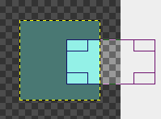
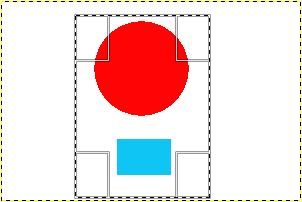
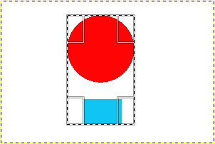

A ferramenta de Cortar (guilhotinar) é usada para cortar ou aparar uma imagem. Ela afeta todas as camadas da imagem, visíveis ou não (opcionalmente pode se restringir a uma camada). Esta ferramenta pode ser usada para refazer o enquadramento de uma fotografia, removendo bordas, eliminando áreas indesejadas e provendo uma imagem com mais foco nos assuntos principais. Também é útil se você precisa de um tamanho específico de imagem que não é o mesmo que as suas dimensões originais.
To define the crop area click and drag with the mouse. A highlighted area will appear that shows the crop boundaries. To move the whole crop area, click in the middle and drag the rectangle. Resizing can be done by moving close to the borders. The mouse cursor will change and you can drag either one side, if you are in the middle, or two sides, if you are in a corner. While you are changing the drag area, the size of the cropped area and the aspect ratio will be shown in the status bar.
Quando o mouse estiver dentro do retângulo, você poderá usar as teclas seta para modificar o retângulo: se estiver sobre as alças, elas serão movidas, senão o retângulo todo será movido. Se você segurar a tecla Shift pressionada o movimento acontece em incrementos de 25 pixels.
To finalize cropping, click inside the crop rectangle or press the Enter key.
![[Nota]](images/note.png)
|
Nota |
|---|---|
|
By default the image canvas size isn't changed after cropping. The Tool Options of the Crop Tool have a setting Delete cropped pixels that can be checked to make sure the canvas size is also adjusted to the cropped area. |
![[Dica]](images/tip.png)
|
Dica |
|---|---|
|
Você pode usar as Guias para ajudar a posicionar a área de corte. Certifique-se de que a opção → está ligada. |
There are different possibilities to activate the tool:
-
A partir do menu da janela de imagens, em: → → ,
-
Ao clicar no ícone da ferramenta:
 na caixa de ferramentas
na caixa de ferramentas -
Usando o atalho de teclado Shift+P
Quando você mantém o botão do mouse apertado sobre o retângulo, as alças desaparecem e
-
se você mantiver Ctrl pressionado, é ligada a opção de Expandir a partir do centro.
-
Se você mantiver a tecla Shift pressionada, a opção Fixa é ligada, que mantém algumas dimensões fixas (por padrão, a proporção do retângulo).

Normally, tool options are displayed in a window attached under the Toolbox as soon as you activate a tool. If they are not, you can access them from the main menu through → → which opens the option window of the selected tool. The available tool options can also be accessed by double clicking the corresponding tool icon in the Toolbox.
- Selected layers only
-
Esta opção fará a ferramenta de corte atuar somente na camada, ou grupo de camadas, ativo.
- Delete cropped pixels
-
When checked, the canvas size is adjusted to the cropped area. By default this is not checked, which means that after cropping the layers have been adjusted, but the canvas size is still the same. This is to make sure you don't remove anything by accident.
- Permitir crescimento
-
Esta opção permite que você estenda o retângulo até além dos limites da imagem, camadas, e mesmo da tela de pintura. Dessa forma, você pode dar o tamanho que desejar à imagem resultante. As áreas além dos limites da imagem serão transparentes. Se você estiver atuando numa camada, o tamanho da camada muda e é preenchido com transparência. Usar a ferramenta de cortar para aumentar tamanho de camadas desta forma pode ser melhor do que usar o comando de Camada->Tamanho dos limites da camada, já que esta ferramenta atua direto na imagem.
Figura 14.101. Exemplo para “Permitir crescimento”

Uma imagem numa tela grande

A opção está ligada. O retângulo de corte se estende para além da tela de pintura.

A imagem resultante.
- Expandir a partir do centro
-
Quando esta opção está ligada, o retângulo de corte cresce simetricamente para todos os lados. O ponto onde você clicou para iniciar o retângulo de corte é usado como centro. Essa opção pode ser liga e desligada dinamicamente, bastando segurar a tecla Ctrl pressionada enquanto se modifica o retângulo.
- Fixa
-
Você também pode acessar esta opção mantendo a tecla Shift pressionada enquanto está desenhando o retângulo de corte. Isto oferece algumas opções para fazer com que o crescimento do retângulo de corte respeite algumas dimensões fixas, ou sua proporção:
-
Proporção: Essa é a configuração padrão. A largura e a altura do retângulo são mantidas com a mesma proporção que tem na imagem original.
-
Largura/Altura: Somente a largura ou a altura são mantidas fixas. O valor da dimensão que foi fixada pode ser digitado na caixa de texto abaixo; O valor padrão é 100 pixels.
-
Tamanho: A largura e a altura são mantidas fixas. Seus valores podem ser digitados na caixa de texto abaixo, na forma “<largura>X<altura>” (por exemplo: 150x100). O retângulo de corte vai assumir esse tamanho assim que você clicar na imagem. A direita, dois botões permitem que você troque rapidamente esses valores, deixando a área fixa no formato de ou . Esta opção é muito útil quando você tem que exportar várias imagens com um tamanho exato, em geral para alimentar um site ou um aplicativo.
-
- Posicionada
-
These two text fields contain the current horizontal and vertical coordinates of the upper left corner of the selection. You can use these fields to adjust the selection position precisely.
- Tamanho
-
These two text fields contain the current width and height of the selection. You can use these fields to adjust the selection size precisely.
- Destaque
-
If you enable this option, the selected area is emphasized by a surrounding mask to make visual selection much easier.
The dark area opacity can be set using the Highlight opacity cursor.
- Guias
-
With this menu you can select the type of guides that is shown within the selection to make the creation of a selection easier, respecting Photo composition rules.
Six options are available:
-
Nehuma guia
-
Linhas centrais
-
Regra dos terços
-
Regra dos quintos
-
Seções áureas
-
Linhas diagonais
-
- Encolher automaticamente
-
O botão de auto encolher vai tentar localizar uma borda, na camada ativa, a partir da qual ele vai estabelecer as dimensões do retângulo de corte. Esta opção só funciona bem para objetos isolados com alto contraste com o fundo.
Figura 14.102. Exemplo de inclinar

Uma imagem com um limite bem nítido e um retângulo de corte.

Depois de clicar no botão de Encolher automaticamente, o retângulo foi encolhido de forma a conter somente os objetos bem definidos na imagem.
- Amostragem combinada
-
Esta opção altera o comportamento do botão de Encolher automaticamente. Estando ativada, a ação leva em conta os pixels de todas as camadas visíveis para determinar os objetos, não só os da camada ativa.